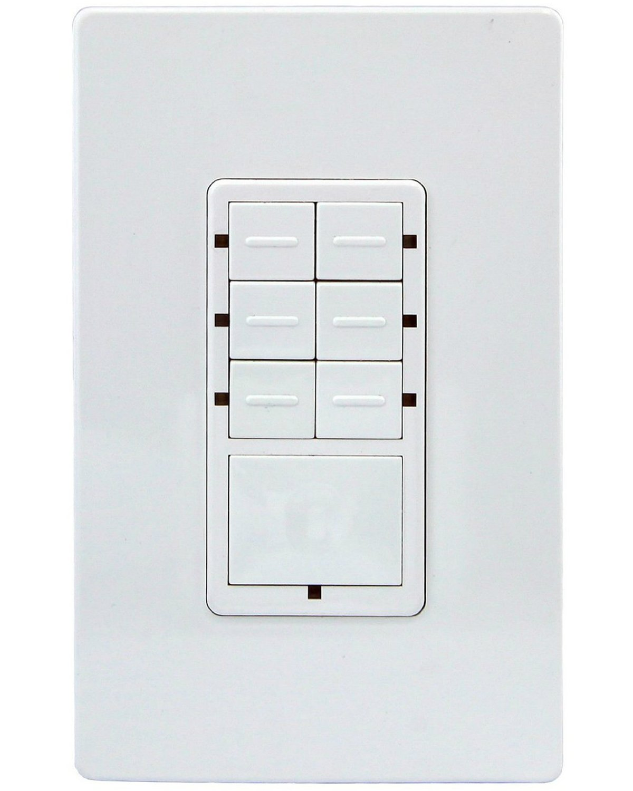
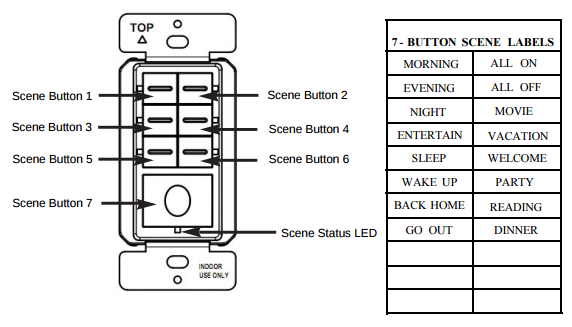

Enerwave ZWN-SC7 Z-Wave Scene Controller 7-Button Switch, 2 Free Wall Plates, NEUTRAL WIRING REQUIRED - White¶

Brief information¶
- Ideal retrofit solution, neutral wire is required.
- Ease of installation. Requires a Primary Z-Wave Controller for programming (Sold Separately)
- Interoperable with other Z-Wave enabled devices
- Blue LED indicates the current status of scene
- Easily activate up to 7 different scenes for Z-Wave enabled devices when used with a Primary Controller (Sold Separately)
How to add to VENUS app¶

- 1. Activation
- Press “Add button” (button ‘+’) in app
- Supply power to device
- Blue LED will blink when device has not been added to network
- LED will not blink when it is added to network
- Wait for VENUS scan & detect this device and inform in app
- 2. Reset then re-add
- Press “Add button” (button ‘+’) in app
- Press and hold the BIGGEST(7) button of scene controller for 3 seconds, the TOP 2 LEDs will be turned on.
- Press and release the TOP-LEFT(1) button, LED will drop down to the MIDDLE LEFT(3).
- Press and release the MIDDLE-LEFT(3) button, LED will drop down to the BOTTOM-LEFT(5).
- After you press the BUTTOM-LEFT(5) button, it will run into manual learning for about 5 seconds.
- All LEDs will blink slowly
- Wait for VENUS scan & detect this device and inform in app
Configuration description¶
There is no configuration in this device.
Factory reset¶
- Press and hold the BIGGEST(7) button of scene controller for 3 seconds, the TOP 2 LEDs will be lit up
- Press and release the TOP-RIGHT(2) button, LED will drop down to the MIDDLE-RIGHT(4)
- Press and release the MIDDLE-RIGHT(4) button, LED will drop down to the BUTTOM-RIGHT(6)
- After you press the BUTTOM-RIGHT(6) button, it will run into factory default.
- Once the controller is reset successfully, all LEDs will flash 3 times and stay on